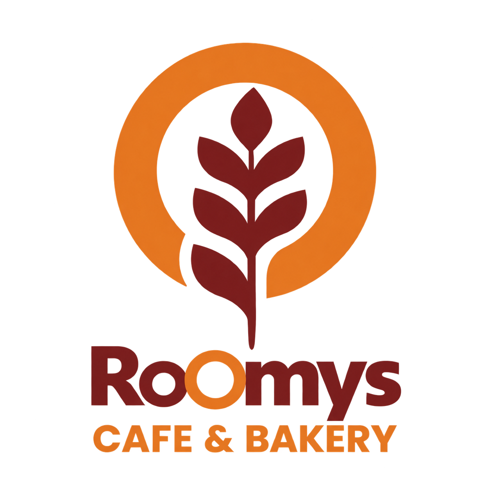

Logo & varian
Logo utama beserta versi terang dan gelap, supaya tetap terbaca di semua latar tanpa dibuat ulang.
Identitas visual Roomys Cafe & Bakery: logo, palet warna, dan tipografi yang dipakai konsisten dari feed Instagram sampai materi cetak.

Bukan cuma file logo. Semua bagian disiapkan supaya tim bisa memproduksi konten harian tanpa keluar dari arah visual.
Logo utama beserta versi terang dan gelap, supaya tetap terbaca di semua latar tanpa dibuat ulang.
Warna brand ditetapkan kodenya dan dipakai konsisten, baik untuk konten digital maupun materi cetak.
Pasangan huruf untuk judul dan teks, menjaga suara visual tetap satu dari feed sampai poster.
Pola feed, story, dan promo disiapkan agar produksi harian cepat dan tetap rapi.
Karakter brand ditentukan: hangat, sederhana, mudah dikenali.
Logo dibuat dan diuji di berbagai ukuran serta latar.
Warna, tipografi, dan pola konten disatukan jadi acuan.
Dipakai di feed, promo menu, dan materi cetak setiap hari.
Ceritakan brand-mu dan ke mana saja materinya akan dipakai. Saya baca, kasih pandangan jujur, dan usul arah visual yang realistis.